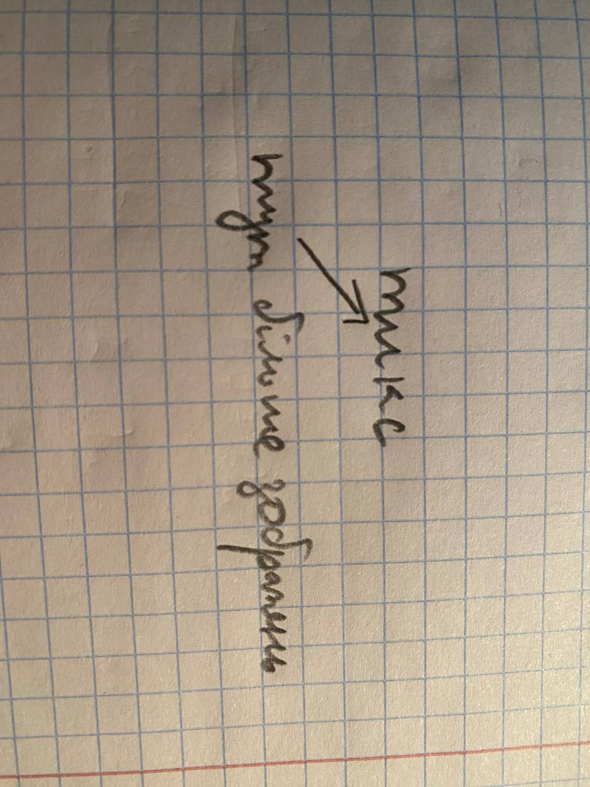

Інтерстеллер
Фільми тут!
Фільм "Інтерстеллар" відомий своєю інтелектуальною складністю, а також захоплюючою подачею складної науково-фантастичної історії. Він став однією з найбільш обговорюваних стрічок 2010-х років та залишає слід у сучасній кінематографії.

"Інтерстеллар" (Interstellar) - це науково-фантастичний фільм, випущений у 2014 році та зрежисерований Крістофером Ноланом. Фільм отримав величезну увагу та позитивні відгуки від глядачів і критиків, завдяки своєму вражаючому виконанню, складній сюжетній лінії та високому науковому рівню. Ось докладніше про "Інтерстеллар":
Це лише один з багатьох прекрасних фільмів.